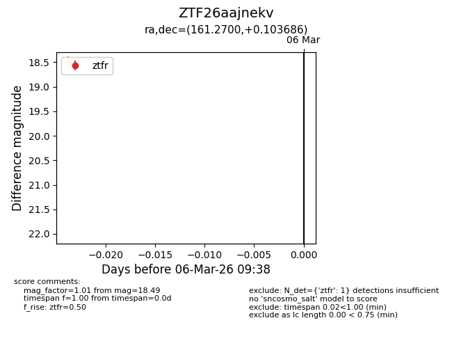
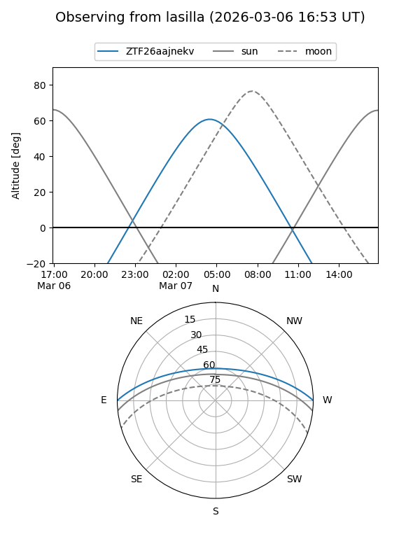
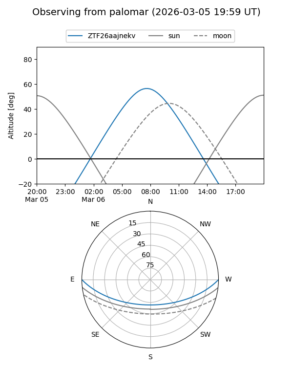

ZTF26aajnekv
Target ZTF26aajnekv at 2026-03-06 09:39
Aliases and brokers:
FINK: link
Lasair: link
ALeRCE: link
alt names
ZTF26aajnekv (ztf,fink_ztf)
Coordinates:
equatorial (ra, dec) = 161.2700,+0.10369
equatorial (HMS+DMS) = 10:45:04.79,+00:06:13.27
galactic (l, b) = (249.3748,+49.37049)
Flags:
Photometry:
last ztfr=18.49
1 ztfr detections
Lightcurve

Visibility


Additional plots